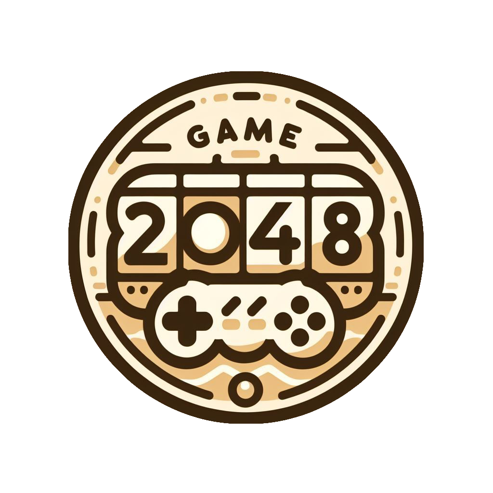

ваш розум проти числового генія
Розробка
За словами автора, наведеними в газеті «Los Angeles Times», гру «2048» було написано менш ніж за два дні як вправу в програмуванні. Чіруллі вважає своє творіння «випадковим вторгненням в ігрову індустрію» та не планує надалі займатися розробкою ігор. Прообразом «2048» є комерційна гра Threes, чиї творці залишилися незадоволеними успіхом «2048» і назвали гру Чіруллі «зіпсованим плагіатом».
Хто? Як? Коли?
2048 — відеогра, початково браузерна, написана 19-річним італійським розробником Габріелем Чіруллі мовою програмування JavaScript. Гра є числовою головоломкою з полем у формі квадрата 4x4 клітинки. Мета гри — складаючи плитки з числами, отримати плитку номіналу «2048», звідки й назва.
Правила гри
Гравець керує рухом чисел на дошці з чотирма напрямками: вгору, вниз, вліво та вправо. Кожне натискання стрілки зміщує всі числа на дошці у вказаному напрямку на максимальну відстань, поки вони не натраплять на межі дошки або на іншу плитку. Якщо дві плитки з однаковими числами зіткнуться, вони об'єднуються в одну, сума чисел на якій дорівнює їх сумі. Мета гри - досягти плитки з числом 2048, об'єднуючи числа на дошці, та продовжувати гру, якщо це можливо.